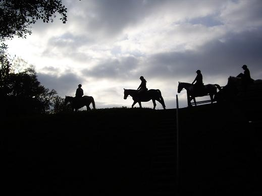
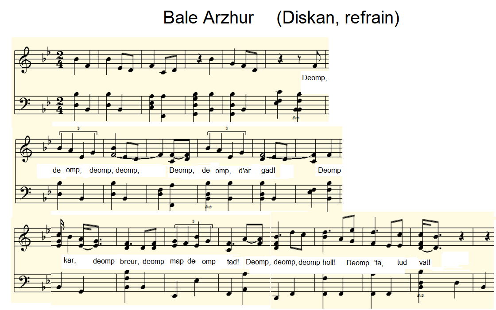
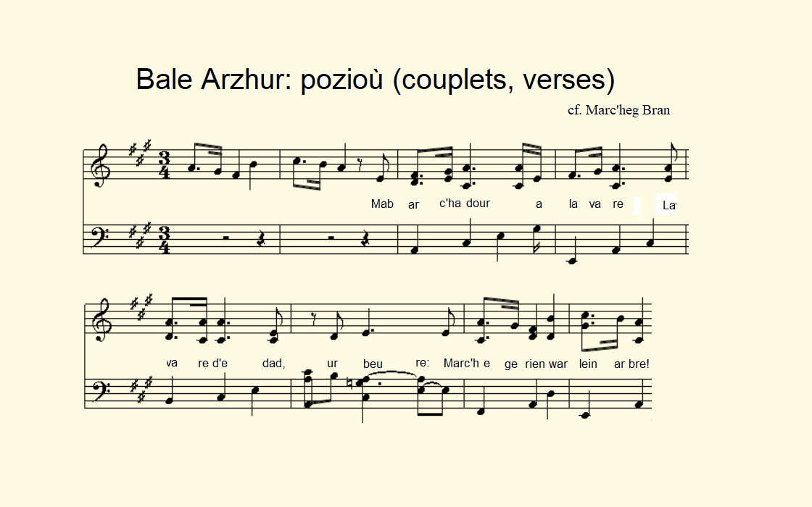
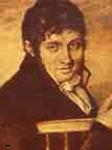
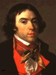
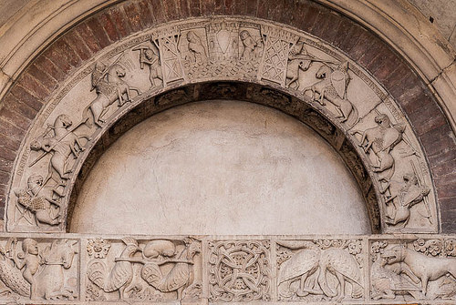

La marche d'Arthur
The March of Arthur
Dialecte de Cornouaille
|
Dans l'édition de 1846 ce vieux Chouan est nommé: Mikel Floc'h de Leuhan. Cf. Klemmgan Itron Nizon Selon Luzel et Joseph Loth, cités (P. 389 de son "La Villemarqué") par Francis Gourvil qui se range à leur avis, ce chant historico-mythologique ferait partie de la catégorie des chants inventés . Plusieurs théories ont cours: 1. Cocktail de pastiches : Selon Gourvil (p. 489), La Villemarqué aurait mis à contribution d'autres chants qui s'avérèrent plus tard être des forgeries: - l' Hymne des Hussites publié en 1837 par la revue "Magasin pittoresque" (strophes d'Arthur: 7, 9, 10, 11, 13); - le Chant d'Altabiscar publié en 1835 par Eugène Garay de Monglave en basque et en français: (strophes d'Arthur: 4, 5, 6). - Gourvil suggère également que les strophes 2 et 3 seraient démarquées d'une phrase du "Fingal" de McPherson (Chant II) qu'il cite. Ces soi-disant ressemblances sont loin d'être frappantes! 2. Chant "arthurien" composé par des bardes chouans instruits : Dans un article (paru dans "Musique Bretonne", oct. 2017) intitulé “Bale Arzur, un chant venu des montagnes" » , M. Goulven Péron rapproche, lui aussi, ce poème du « Fingal » de McPherson, non du Chant II mais du Chant IV où il retrouve l’appel au combat de la strophe 1, le défilé de l’armée fantôme des strophes 2, 3 et 6, la bataille des strophes 8 et 9. La suite du chant IV où l’écho du mont Cromla répond à la voix de Fingal se retrouverait dans « Le cygne » où ce sont les Monts du Laz qui résonnent. De même que les 12 hommes venus demander, au nom de Fingal, la main de sa fille à Branno seraient à l’origine des 12 ambassadeurs venus demander la main d’Azénor (strophes 3 et 4 de la « Tour d’Armor » du Barzhaz). Dans les deux cas le meilleur accueil est accordé à la demande. M. Péron, loin d’imputer un plagiat à La Villemarqué , conclut qu’il s’agit de « créations récentes que [celui-ci] feignant d’être dupe, aurait incorporées dans son recueil […] et dont la] composition date au mieux du temps de la chouannerie . » L’auteur de ces pastiches d’un ouvrage très répandu dans la 2ème moitié du 18ème siècle serait à chercher parmi les personnages instruits cités par La Villemarqué : Anne Roland, meunière du Follezou, Michel Floch, fils d’avocat, Louis Bourriquen, fils de notaire, Vincent Le Roux, métayer du marquis de Kersalaün, sans oublier l’auteur de l’élégie « La Dame de Nizon », Jacques-Joachim Stanguennec, recteur de Trégourez. « Nominoë », « Le Renard » et certaines parties de « Lez-Breizh » relèveraient du même processus de création récente. 3. Authentique chant "Arthurien" ancien remanié par La Villemarqué: Fañch Elies-Abeozen dans son étude linguistique "En ur lenn Barzhaz-Breizh", p. 119-122 de l'édition 2013 par Preder, est d'un avis différent. Il croit à un authentique chant ancien remanié par La Villemarqué. Il souligne, comme on l'a fait remarquer ici plusieurs fois, que La Villemarqué cite souvent lui-même ses sources dans ses commentaires qu'on ne saurait lire avec trop d'attention. En l'occurrence, on lit dans la "note" qui suit le poème: "Rien n'empêche de croire...que le chant a passé du dialecte cambrien [=du gallois ] dans le dialecte armoricain au 7ème siècle... La pièce offre effectivement plusieurs tournures...[et] expressions étrangères au dialecte du continent et la forme ternaire et allitérée des poèmes bardiques gallois" (Il ajoute que "les connaisseurs s'accordent à trouver à la mélodie... un caractère tout particulier d'antiquité" ). Elies-Abeozen ne suppose pas pour autant qu'on ait affaire à un chant gallois adapté par La Villemarqué mais que celui-ci a dû trouver dans une chanson de Chouans des vestiges de l'antique vénération du roi Arthur qui date de l'époque "'où l'épée n'avait pas encore été cassée en deux' comme dit le poème et qu'à cette relique il s'est efforcé de donner une forme plus proche de l'original supposé que celle d'aujourd'hui en parsemant son texte de quelques mots gallois...Si le lecteur ne connaît pas un peu de gallois, il ne comprendra rien à ce chant. Michel Floc'h lui même n'aurait pas reconnu sa chanson." Outre des mots ou des tours gallois ("cad", "cadwr", "rhif", "rhwng", "am" dans "kalon am lagad, etc.", "as" - mot anglais!, "moel","llawen galon"), le Barde de Nizon a fait appel à des mots rares et anciens trouvés dans les dictionnaires: "marc'heger, mirc'hed", "lintri", "gwall", "freuat"... en se trompant parfois sur le sens ("hinteal" ne signifie pas "renifler" mais "s'ébrouer") et en faisant fi de la grammaire ici et là ("hor gwall vev", "na varvimp" au lieu de "ne varvimp"). Elies-Abeozen conclut: "Selon La Villemarqué, 'seule la dernière strophe qui a sans doute été ajoutée par une voix moderne est répétée trois fois par les chanteurs. Les autres ne leur offraient probablement qu'un sens vague'. On le croit volontiers! (tamm ebet ned eo diaes da grediñ). Après le toilettage effectué par La Villemarqué, ses emprunts aux gallois surtout, nous ne voyons plus guère à quoi pouvait ressembler la Marche d'Arthur chantée par Michel Floc'h de Leuhan dans les Montagnes-Noires." 4. Chants de chouans combinés et "arthurianisés" par La Villemarqué : La publication en novembre 2018 des carnets de collecte N°2 et 3 de La Villemarqué, permet de faire un autre rapprochement, à savoir avec l' Hymne des Chouans du Carnet N°2. Outre que le «buhez ouzh buhez…», “notre vie contre la leur” - qui se retrouve dans un autre chant du carnet, Les gendarmes de Châteauneuf-du-Faou - rappelle étrangement la strophe 8 d’Arthur «Kalon ouzh lagad! Penn ouzh brec’h!», cet hymne qui ne semble rien devoir à Ossian, ressemble, par son allure générale, aux «Les Bleus» (Ar re C’hlaz) du Barzhaz, composé par Guillou Arvern , d’une part... et au « Bale Arzhur » d’autre part. Plutôt qu’une imitation d’Ossian par Michel Floc ‘h, on peut voir dans la «Marche d’Arthur» une imitation de Guillaume Le Guern dit «Sans-souci» par La Villemarqué. Si Arthur a fait une belle carrière littéraire en Bretagne, il occupe une place de choix dans l'imaginaire collectif du Pays de Galles. C'est ainsi qu'un poème gallois du 9/12ème siècle tiré du manuscrit « Llyfr Taliesin », datant du 13ème siècle, Preideu Annwfyn , voit en lui un ami et protecteur de la poésie. (cf. également Peis Dinogad ) |
 Ton 1 Mode dorien, fond sonore de cette page Ton 2 Cornemuse et tambour. Arrangements MIDI: Chr. Souchon   Il est de fait qu'il s'avère assez difficile de faire cadrer ces deux mélodies avec un rythme de marche strictment binaire. La Villemarqué a fait de la 1ère mélodie le timbre de son Marc'heg Bran . Le 3ème vers du couplet 1 est presque identique au vers 2 de la strophe 3 du Cygne . Le cantique cité par Elies est le suivant: Fañch Elies-Abeozen states that "the melody published at the end of Barzhaz, page V, is only suitable for the 1st stanza which is in reality a refrain . The other stanzas are sung to the tune which accompanies the verses of the hymn "How beautiful is the mother of Jesus" (cf. J Le Marrec, Cantiques bretons, Quimper, 1942, p.42. " It is in fact rather difficult to fit these two melodies into a strictly binary marching rhythm. La Villemarqué made the first melody the vehicle of his Marc'heg Bran . The 3rd line of verse 1 is almost identical to line 2 of stanza 3 in The Swan . The hymn cited by Elies is as follows: Pegen dous ha trugarezus! Pegen mat ha madelezus! Poz 1 : -Lavar din-me, den an Arvor, Ha ken kaer eo da vag war vor, Gant he gouelioù gwenn-kann digor? |
In the 1846 edition this old Chouan is called by his name: Mikel Floc'h from Leuhan. Cf. Klemmgan Itron Nizon According to Luzel and Joseph Loth, quoted by Francis Gourvil (p. 389 of his "La Villemarqué"), this historical/mythological song was " invented " by its alleged collector. Several theories are circulated: 1. A patchwork of forgeries : According to Gourvil (p. 489), La Villemarqué had elaborated on two other songs which proved to be both forgery: - The Hussitic Hymn published in 1837 by the periodical "Magasin pittoresque"(in "Arthur", stanzas: 7, 9, 10, 11, 13); - The Altabiscar Song published in 1835 by Eugène Garay de Monglave in Basque and in French: ("Arthur" stanzas: 4, 5, 6). - Gourvil also suspects that stanzas 2 and 3 could be plagiarized from a sentence he found in "McPherson's "Fingal" (Song II) which he quotes. These alleged similarities are far from evident! 2. "Arthurian" songs composed by educated Chouan Bards : In an article titled " Bale Arzur, a song from the Mountains " (in Musique Bretonne, Oct. 2017), Mr. Goulven Péron , also parallels this poem with McPherson’s “ Fingal ”, not Chant II, but Chant IV where he finds in succession: the call to battle of stanza 1, the parade of the phantom army of stanzas 2, 3 and 6, and the battle of stanzas 8 and 9. The rest of Chant IV mentions the echo of Mount Cromla answering Fingal's voice, just as do, in " The Swan ", the Mounts of Laz. Just as the 12 men, coming to ask from Branno, on behalf of Fingal, the hand of his daughter, could be the origin of the 12 ambassadors who come to ask the hand of Azénor (in stanzas 3 and 4 of the " Tower of Armor " in the Barzhaz). In both cases the best reception is granted on these demands. M. Péron, far from imputing plagiarism to La Villemarqué , concludes that these pieces could be " recent creations which [the latter,] pretending to be duped, has included in his collection [... and whose composition] dates at the earliest from the time of the Chouan Wars ” . The author of these pastiches of a work which was widespread in the 2nd half of the 18th century, could be one of the arguably educated characters quoted by La Villemarqué: Anne Roland, wife of the miller of Follezou, Michel Floch, son of a lawyer, Louis Bourriquen, son of a notary, Vincent Le Roux, farmer on Marquis de Kersalaün’s estate, and, last but not least, the author of the elegy "The Lady of Nizon", Jacques-Joachim Stanguennec, rector of Trégourez. " Nominoë ", " The Fox " and some parts of " Lez-Breizh " could result from the same process of recent creation. 3. A genuine old "Arthurian" song "processed" by La Villemarqué: Fañch Elies-Abeozen in his linguistic survey "En ur lenn Barzhaz-Breizh",(p. 119-122 in the 2013 edition by Preder), takes a different view. He believes in an authentic ancient song reworked by La Villemarqué. He emphasizes, as was often pointed out on this site, that La Villemarqué often hints at his own sources in his comments, which cannot be perused too intently. In this case, we read in the "note" following the poem: "Nothing prevents to believe ... that the song passed from the Cambrian dialect [= Welsh ] into the Armorican dialect in the 7th century ... The piece features several words and phrases ... extraneous to the continental dialects and a ternary structure and alliterations that are typical for the Welsh bardic poems " (He adds: "connoisseurs agree to find in the tune ... a very particular character of antiquity" ). Elies-Abeozen does not supposes that we are dealong with a Welsh song adapted by La Villemarqué, but that he must have found in a genuine Chouan song vestiges of the ancient veneration of King Arthur which dates from the time "'when the sword had not yet been broken in two" 'as the old saying goes. To this relic he endeavoured to give a form closer to the supposed original by sprinkling his text with Welsh words ... If the reader does not know some Welsh, he will understand nothing of this song. Michel Floc'h himself would not have recognized his song. " Beside Welsh words or phrases ("cad", "cadwr", "rhif", "rhwng", "am" in "kalon am lagad, etc.", "as" - an English word !, "moel", " llawen galon "), the Bard of Nizon made use of rare and ancient words found in dictionaries:" marc'heger, mirc'hed "," lintri "," gwall "," freuat "... being sometimes mistaken about a word's meaning ("hinteal" does not mean "to sniff" but "to shake oneself") and ignoring the grammar here and there ("hor gwall vev", "na varvimp" instead of "ne varvimp") . Elies-Abeozen concludes: "According to La Villemarqué, 'only the last stanza - which was undoubtedly added by a modern voice - is repeated three times by the singers. They probably could not construe the others", which we may easily believe (tamm ebet ned eo diaes da grediñ). After the "grooming" carried out by La Villemarqué, especially his borrowings from the Welsh, we hardly see what "Arthur's March" sung by Michel Floc'h from Leuhan in the Black Mountains could look like." 4. A mix of Chouan songs combined and turned into an "Arthurian" ode by La Villemarqué : The publication in November 2018 of La Villemarqué's notebooks N ° 2 and 3 enables us to make another comparison, namely with the Hymn of the Chouans in Notebook N ° 2. In addition to the "buhez ouzh buhez ...", "our life against theirs" - which is found in another song in the notebook, "The gendarmes of Chateauneuf-du-Faou" - which is strangely reminiscent of stanza 8 in Arthur's March, "Kalon ouzh lagad! Penn ouzh brec'h! ", this hymn, that seems to owe nothing to Ossian, resembles, by its general appearance, "Les Bleus" (Ar re C'hlaz) of the Barzhaz, composed by Guillou Arvern , on the one hand. .. and "Bale Arzhur" on the other hand. Rather than an imitation of Ossian by Michel Floc'h, we could suspect in the "March of Arthur" an imitation of Guillaume Le Guern alias "Sans-souci" by La Villemarqué. If Arthur had a fine literary career in Brittany, he occupies a very special place in the collective imagination of Wales. Thus a 9 / 12th century Welsh poem, Preideu Annwfyn , from the 13th century manuscript “Llyfr Taliesin” sees him as a friend and protector of poetry. (See also Pais Dinogat ) |
| Français | English |
|---|---|
|
1. Allons, allons, au combat allons!
Trad. Ch. Souchon (c)2003 |
1. March, march! Let us go to the fight!
Transl. Ch. Souchon (c)2003 |
Cliquer ici pour lire les textes bretons.
For Breton texts, click here.

|
Qui était Arthur?
Bien que les historiens de l'époque - St Gildas, Bède le Vénérable, Nennius - n'en parlent que très peu ou pas du tout, il est généralement admis qu'Arthur a effectivement existé et combattu les Saxons entre 500 -Bataille du Mont Badon- et 537 -mort d'Arthur à la bataille de Camlann (selon les "Annales de Cambrie", 10ème s.). Les "Annales de Cambrie" voient Arthur combattre au Mont Badon en 516 et précisent : "Bellum Badonis in quo Arthur portavit crucem Domini Jesu Christi tribus diebus et tribus noctibus in humeros suos et Brittones victores fuerunt." "La bataille du mont Badon où Arthur porta sur ses épaules la croix de NS Jésus-Christ pendant 3 jours et 3 nuits et où les Bretons furent vainqueurs." Gildas (in "De excidio et conquestu Britanniae", 543) faisant l'éloge d' Ambroise Aurélien , appelle celui-ci le dernier Romain demeuré en Bretagne dont les parents «auraient mérité de porter la pourpre» (d'être consuls). Il s'était distingué en combattant les Saxons. Cependant Gildas ne dit pas qui remporta la victoire au Mont Badon vers 500, l'année de sa propre naissance: "Ex eo tempore,nunc cives, nunc hostes vincebant, ut in ista gente experiretur Dominus solito more praesentem Israelem, utrum diligat eum, aut non, usque ad annum obsessionis Badonici montis, novissimaeque ferme de furciferis, non minimae stragis, quique quadragesimus quartus, ut novi orditur annus, mense jam uno emenso. qui et meae navitatis est". "Depuis cette époque, des victoires étaient remportées, tantôt par nos concitoyens, tantôt par nos ennemis, car notre Seigneur éprouvait notre peuple, comme il a coutume de le faire, pour savoir s'Il était aimé ou non de cet Israël des temps présents. Cela dura jusqu'à l'année du siège du Mont Badon, la plus récente, sans doute, mais non la moins sévère des défaites infligées à notre cruel ennemi. C'était il y a quarante-trois ans et un mois, l'année qui fut aussi celle de ma naissance." Arthur a peut-être combattu à Mont Badon, mais Gildas, né l'année même de cette bataille, n'en dit rien. Peut-être Arthur est-il aussi intervenu en Bretagne continentale, ce qui expliquerait la popularité dont il jouit dans cette province et dont cette marche, surtout connue pour son dernier couplet, est l'illustration la plus frappante. Une preuve de l'engouement suscité par le "Barzaz Breiz": une paraphrase de la "Marche d'Arthur" et la traduction du début de la "Prophétie de Gwenc'hlan" publiée en 1912 en NEERLANDAIS . Le cycle Arthurien et le Barzhaz Breizh. Avec la "Marche d'Arthur" et le "cycle de Merlin", le "Barzhaz" aborde le domaine de la "Matière de Bretagne", au centre de l'oeuvre de Chrétien de Troyes, de Marie de France, et bien d'autres. L'élément le mieux connu de ce corpus est la légende arthurienne qui doit sa fortune littéraire à Geoffroy de Monmouth (c. 1138). Cependant, elle est déjà évoquée dans un poème gallois peut-être plus ancien, "Y Goddodin" , attribué à Aneurin , poète du 7ème siècle, mais connu par un manuscrit du 13ème siècle. Arthur y est présenté comme un parangon de bravoure: Au sujet d'un certain Gwawrddur, il est dit à la strophe 99: "Gochore brein du ar uur / caer ceni bei ef arthur", "Sans être un Arthur, il nourrissait les corbeaux noirs sur la muraille" (sous-entendu "avec les corps des ennemis qu'il tuait"). Cette légende doit son succès aux thèmes qu'elle combine: Camelot, le siège de l'antique vertu chevaleresque déchue par les manquements d'Arthur et de Lancelot et la quête du Gral où s'engagent les chevaliers Galahad, Perceval et autres. Dans ce cadre sont traités des thèmes chrétiens: idéal de vertu et finitude humaine, quête de reliques chrétiennes. On y trouve aussi des thèmes propres à la société de l'époque: l'amour courtois (Lancelot et Guenièvre et Tristan et Iseut), ainsi que des caractères qui l'apparentent à la mythologie celte, parfois considérés comme l'élément central de l'édifice. Tel est en tout cas l'avis de La Villemarqué Sa thèse, que l'on trouve dans l'introduction de l'édition de 1839 du "Barzhaz" s'énonce comme suit: La poésie populaire qui, contrairement à ce qu'on observe au Pays de Galles a triomphé, dès le VIème siècle, de la poésie savante des Bardes, a développé en Armorique trois genres distincts: les chants historiques, les chants d'amour et les chants religieux. C'est cette littérature qui va inspirer les poètes du Moyen-âge, de Marie de France à Chrétien de Troyes et non l'inverse. Origine provençale de la Table Ronde? Dans le numéro d'octobre 1839 de la "Nouvelle Revue de Bretagne" un critique, Louis Hamon , a ouvert la voie à La Villemarqué lorsqu'il écrit "[La Bretagne] peut prétendre à une gloire plus haute s'il est vrai que son peuple fut l'inventeur des traditions populaires de la Table Ronde et que les poètes anglo-normands qui ont rimé ces traditions ont emprunté à [s]es bardes la matière et la forme de leurs poèmes."  C'est une voie dans laquelle La Villemarqué s'engouffre en 1842, lorsqu'il publie ses "Contes populaires des anciens Bretons" précédés d'un "Essai sur l'origine des épopées chevaleresques de la Table Ronde" . Il s'en prend à la thèse de l'origine provençale du cycle de la Table Ronde, principalement défendue par Charles-Claude Fauriel (1772 - 1844) qui assurait dans "Histoire de la Poésie provençale", ouvrage posthume publié en 1846, que ce "genre de composition...n'a jamais existé ni pu exister en Bretagne". La Villemarqué affirme que la publication de son "Essai" aurait fait revenir Fauriel de son système, rejoint en cela par des personnalités aussi éminentes que Victor le Clers, Doyen de la Sorbonne et Ernest Renan, auteur de la "Poésie des races celtiques".Les convictions de Renan n'étaient sans doute pas très fermes, car dans un article publié dans la "Revue des deux mondes" en 1854, il écrivait: "Le vieux chouan qui récitait et ne comprenait rien savait-il ce qu'il disait? Me nom d'Arthur n'était-il pas de ceux qu'il estropiait? L'oreille de La Villemarqué ne s'est-elle pas prêtée complaisamment à entendre le nom qu'il devinait. C'est du moins une base bien fragile pour asseoir une hypothèse aussi hardie qu'un chant répété pendant mille ans par des paysans qui ne le comprennent pas." L'audacieuse théorie de l'antériorité des chants bretons Il affirme l'antériorité des chants bretons sur les "Mabinogion" gallois (où l'on trouve, en partie, les mêmes récits que chez Chrétien de Troyes) que "le peuple actuel des campagnes de notre Cornouaille [les] entend plus facilement...que les paysans modernes du Glamorgan", défendant ainsi une conception du langage considéré comme quasi immuable. De sorte que "l'origine armoricaine ... du cycle cambrien d'Arthur est attestée... tout à la fois par la littérature des Bretons du continent et par les Mabinogion eux mêmes." Les "romans" français ou anglo-normands sur Arthur, Merlin, Lancelot, Tristan, Ivain, Erec et Perceval , ainsi que leurs équivalents gallois, Owen ou la Dame de la Fontaine, Ghérain t ou le Chevalier au Faucon et Pérédur ou la Bassin magique étaient présentés suivis de "Notes et éclaicissements" et d'un "Examen critique des sources bretonnes". L'auteur "démontrait" que le tout était originaire d'Armorique. Dans le Barzhaz de 1845, plusieurs "chants arthuriens sont assortis de commentaires allant dans ce sens: 2 chants sur Merlin dont le nombre sera porté à 4 en 1867, ainsi que l'"Enfant supposé" - que certains commentateurs rapprochent de Lancelot -; 2 chants sur Arthur (la présente "Marche d'Arthur" et "Arthur et saint Efflam"); 1 sur Tristan ("Le chevalier Bran"), 2 sur Perceval (le "Départ" et le "Retour" de "Lez-Breizh". Parmi les chants "arthuriens" du Barzhaz, ceux de l'édition 1839 appartiennent sans doute à l'origine au répertoire populaire authentique: "Merlin Barde" et "Merlin Devin", l"'Enfant supposé". Il en est de même de 2 nouveau-venus dans l'édition de 1867: "Merlin au Berceau" et "Conversion de Merlin". Parmi ceux qui apparaissent dans l'édition de 1845, certains semblent des pastiches de romans français ou gallois (le "Départ" et le "Retour de Lez-Breizh"). La "Marche d'Arthur" permet plusieurs hypothèses comme on l'a dit plus haut. L'âme bretonne s'incarne avant tout dans le personnage d' Arthur et les 3 éditions du Barzhaz (1839, 1845 et 1867) présentent une longue introduction se concluant par une phrase qui, à quelques mots près, demeure identique: "Quand je vois la Bretagne qui reste la même, alors que tout change autour d'elle, je ne peux que répéter avec les Bretons d'autrefois: Non! le roi Arthur n'est pas mort!" L'origine de cette théorie est l'"Histoire vulgaire des Princes" (Historia regum Britaniae rédigée entre 1135 et 1138) que l'auteur, Geoffroy de Monmouth dit avoir traduit d'"un livre très ancien écrit en langue bretonne" - ce que le critique allemand A.W. Schlegel considère comme une fable. Elle s'appuie en outre sur la remarque que l'on trouve dans plusieurs chants que "ces choses ont été mises en vers pour qu'elles soient chantées et qu'on en garde le souvenir" ou pour parler comme Marie de France , à propos du lai de Bisclavret "pur remembrance a tuz dis mais" (pour qu'on s'en souvienne à tout jamais). Il y avait dans cette thèse du caractère quasiment universel de "l'idiome ancien" de quoi combattre la formule de Barère qui ,dans son discours du 27 janvier 1794, déclarait "le fédéralisme et la superstition parlent bas-breton". Le nationalisme breton On trouvera à propos du Vin des Gaulois et de l'Elégie de Pontcallec une discussion sur le rôle, certainement involontaire, joué par La Villemarqué dans l'éclosion d'un mouvement nationaliste breton auquel les chants du Barzhaz dont l'authenticité est la plus discutable servent de référence historique ou mythique. La marche d'Arthur est de ceux-là. Elle a inspiré, au grand poète Glenmor (1931-1996), ce "chant de l'ARB - Armée révolutionnaire bretonne! - qui a fière allure en dépit de son caractère aussi répréhensible que fantasmagorique! Selon Gourvil, même les mélodies du Barzhaz seraient des inventions de l'auteur. Cette marche, avec son rhythme bizarre, témoigne d'une inventivité musicale hors du commun. Pour parvenir à ce niveau de perfection, il a fallu 3 versions successives aux auteurs de la marche La Varsovienne ! Source: Aux origines du nationalisme breton" de Bernard Tanguy (Editions 10/18. Oct 1977) |
Who was Arthur?
Though the historians of that time - St Gildas, Bede, Nennius - don't mention him or very briefly, it is generally admitted that Arthur did exist and that he fought the Saxons between 516 -Battle of Mount Badon- and 537 -death of Arthur at the battle of Camlann, according to the "Annales Cambriae" (10th century). The "Annals of Cambria" mention Arthur's fighting at Mount Badon in 516 as follows: "Bellum Badonis in quo Arthur portavit crucem Domini Jesu Christi tribus diebus et tribus noctibus in humeros suos et Brittones victores fuerunt." "Battle of Mount Badon where Arthur carried the cross of Jesus Christ on his shoulders for 3 days and 3 nights and where the Bretons were victorious." Gildas (in "De excidio et conquestu Britanniae", 543) praising Ambrose Aurelian , calls him the last Roman remaining in Brittany, whose parents "would have deserved to wear purple" (to be consuls). He had distinguished himself by fighting the Saxons. However Gildas does not state who won the victory at Mount Badon around 500, the year of his own birth: "Ex eo tempore,nunc cives, nunc hostes vincebant, ut in ista gente experiretur Dominus solito more praesentem Israelem, utrum diligat eum, aut non, usque ad annum obsessionis Badonici montis, novissimaeque ferme de furciferis, non minimae stragis, quique quadragesimus quartus, ut novi orditur annus, mense jam uno emenso. qui et meae navitatis est". "After this, sometimes our countrymen, sometimes the enemy, won the field, to the end that our Lord might in this land try after his accustomed manner these his Israelites, whether they loved him or not, until the year of the siege of Bath-hill, when took place also the last almost, though not the least slaughter of our cruel foes, which was (as I am sure) forty-three years and one month ago, at the time of my own nativity." Arthur may have fought at Mount Badon, but Gildas, born the very year of this battle, says nothing about it. Maybe he was also engaged in Brittany. That would explain the popularity he enjoys in this province, of which this march, -and specially its last rhyme-, is the most striking illustration. A proof of the enthusiasm aroused by the "Barzaz Breiz" throughout Europe: a free adaptation of "Arthur's March" and a translation of the first stanzas of "Gwenc'hlan's prophecy" published in 1912 in DUTCH . The Arthurian cycle and the Barzhaz Breizh With the "March of Arthur" and the "Merlin cycle", the "Barzhaz" addresses the "Matter of Britain", a literary genre developed in the works of Chrétien de Troyes, Marie de France and many others.. The best known element of this body is the literary character of Arthur created by Geoffrey of Monmouth (c. 1130). However there are already references to him in a maybe older Welsh poem: "Y Goddodin" , attributed to the 7th-century poet, Aneurin , but known from a manuscript of the 13th century. Arthur is presented as a paragon of bravery. About a certain Gwawrddur, it is said in stanza 99: "Gochore brein du ar uur / caer ceni bei ef arthur", "Without being an Arthur, he fed the black crows on the rampart" (implied "with the bodies of the enemies he killed"). The legend became popular largely because of the themes it intertwines: Camelot, the seat of ancient chivalric virtue undone by the flaws of Arthur and Lancelot and the quest of the Holy Grail by knights like Galahad, Perceval and others. It provided a frame to discuss Christian issues destruction of human plans for virtue by moral flaws of the persons concerned, quest for Christian relics, as well as social themes particular to the feudal society: courtly love (Lancelot and Guinevere or Tristan and Iseult). It is also possible to link these tales with Celtic mythology, which has been sometimes considered a pivotal element of the whole structure. Such was La Villemarqué's opinion. His theory, set forth in the introduction to the 1839 edition of the "Barzhaz" is as follows: Traditional folk poetry has in Brittany, unlike in Wales, superseded, from the VIth century onwards, the learned Bardic poetry and developed into three directions: historic songs, love songs and religious songs. This literature has inspired medieval writers like Marie de France or Chrétien de Troyes and not the contrary. Provençal origin of the Round Table? In the October 1839 issue of the "Nouvelle Revue de Bretagne" a critic Louis Hamon showed the way to La Villemarqué when he wrote: "[Brittany] may claim to be held in higher repute inasmuch as its people initiated the popular traditions of the Round Table and the Anglo-Norman poets who rhymed them borrowed from their bards the matter and the form of their poems." Into that breach La Villemarqué rushed in and published in 1842 his "Essay on the origin of the chivalresque Round Table epic ventures" (as an introduction to his "Folk tales of the ancient Bretons" ). He attacks the theory of the Provençal origin of the Round Table cycle whose chief defender was Charles-Claude Fauriel (1772 - 1844) who stated in his "History of Provence poetry", a posthumous work published in 1846 that "this kind of composition... never did or could exist in Brittany". La Villemarqué assures that by publishing his "Essay" he had led Fauriel to give up this point of view, followed by as prominent authorities as were Victor Le Clerc, the Dean of the Sorbonne and Ernest Renan, the author of "Poetry of the Celtic Races". Renan's convictions were, to be sure, not very firm, since in an article published in the "Revue des deux mondes" in 1854, he wrote: "Did the old Chouan - who recited and understood nothing- know what he was saying? Was the name "Arthur" not one of those he crippled? Did La Villemarqué's ear not guess the name he wanted to hear. This is at least a very fragile basis to put up as bold a theory as that of a song repeated for a thousand years by peasants who did not understand it." A bold theory: The anteriority of Breton songs He maintains that Breton songs are older than the Welsh "Mabinogion" ( which partly include the same tales as Chrétien de Troyes' works) and that "the Breton country people of Cornouaille understand [the Welsh tales] better than today's Glamorgan peasants do", thus advocating a conception of language based on immutability. So that the proof of "the Armorican origin of the Welsh Arthurian cycle" is found in the literature of the continental Britons and in the Mabinogion themselves." French or Anglo-Norman "romances" about Arthur, Merlin, Lancelot, Tristan, Ivain, Erec and Perceval , as well as their Welsh equivalents, Owen or the Lady of the Fountain, Gheraint or the Knight with the Falcon and Peredur or the Magic Cauldron were presented followed by "Notes and clarifications" and an "Investigation of Breton sources". The author “demonstrated” that everything originated in Armorica. In the Barzhaz of 1845, several "Arthurian songs are accompanied by comments along these lines: 2 songs on Merlin, a number increased to 4 in 1867, as well as the "Changeling" - that some commentators parallel to Lancelot -; 2 songs on Arthur (the present "March of Arthur" and "Arthur and Saint Efflam"); 1 on Tristan ("The Knight Bran"), 2 on Perceval (the "Departure" and the "Return" in the "Lez-Breizh" epic. Among the "Arthurian" songs in the Barzhaz, those of the 1839 edition undoubtedly originally belonged to the authentic folklore: "Merlin Bard", "Merlin the Soothsayer" and the "Changeling". The same goes for 2 newcomers in the 1867 edition: “Merlin in his Cradle” and “Conversion of Merlin”. Among those which appear in the 1845 edition, some seem to be pastiches of French or Welsh romances (the "Departure" and the "Return of Lez-Breizh"). The "Arthur March" allows several hypotheses as stated above. The Breton soul is embodied above all in the character of Arthur and the 3 editions of Barzhaz (1839, 1845 and 1867) present a long introduction concluding with a sentence which,but for a few words, remains identical: "When I see Brittany which remains the same, while everything changes around it, I can only repeat with the Bretons of yesteryear: No! King Arthur is not dead! "  The primary source of this theory is the "History of the Kings of Britain" (Historia Regum Britaniae) written between 1135 and 1138, translated, so says its author, Geoffrey of Monmouth "from a very old Breton book". However the German critic A.W. Schlegel considers it a fiction.This theory is corroborated by the repeated remark found in several songs that "these facts were turned into rhymes to be sung and remembered" or, to speak like Marie de France in the Lay of Bisclavet, "pur remembrance a tuz dis mais" (to keep of it eternal remembrance). This theory proclaiming the "old (Breton) language" to be practically a medium of universal culture was apt to counteract the effect of the famous sentence uttered on 27th January 1794 by the Convention deputy and member of the Committee of Public Salvation, Barère : "Federalism and superstition speak Breton". Breton nationalism On the pages Wine of the Gauls and Lament for Pontcallec the -very likely unintentional- part La Villemarqué had in originating the Breton Nationalist Movement is discussed. It appears that the most dubious songs of this collection are used as their favourite historical or mythical references by its followers. Among them the "March of Arthur" stands out clearly. It insprired the great poet Glenmor (1931-1996) with the following "Song of the ARB" - Breton Revolution Army! - which cuts a fine figure in spite of the reprehensible phantasmagory embodied in it! Gourvil suspects that even the tunes in the Barzhaz were very likely invented by the collector. The weird beat of the present march, attests an uncommon musical resourcefulness. To reach this level of perfection, 3 successive versions were needed in the case of the march Warshawianka ! Source: Aux origines du nationalisme breton" by Bernard Tanguy (Editions 10/18. Oct 1977) |
|
La Porte de la Pêcherie à Modène (Italie du Nord)
Première représentation graphique connue du cycle d'Arthur: la plus grande partie de la cathédrale date de 1099-1184, et cette porte doit dater de 1150 environ. Les noms de 9 des 10 personnages sont inscrits sur la corniche de l'archivolte: Isdernus, Artus de Bretania , Burmaltus, Winlogee, Mardoc, Carradoc, Galvaginus, Galvariun, Che. La scène rappelle un passage de la Vie de Saint Gildas par Caradoc de Llancarfan, le siège par Arthur et les armées de Cornouailles et de Domnonée (Devon) de l'Urbs vitraea (Glastonbury) où Melwas/Mardoc retient l'épouse "violata et rapta" dudit Arthur. D'autres n'apparaissent que dans des oeuvres plus tardives: le "Chevalier à la charrette" de Chrétien de Troyes (Méléagant/Mardoc, Kaï, Gauvain), le "roman d'Yder" (Yder, Guinloïe),"Durmart" (Burmaltus?) et le "Lanzelet" d'Ulric de Zatsikoven (Madruc/Mardoc). Les noms de Caradoc maître de la Tour douloureuse et celui du frère de Gauvain, Agravain/Galvariun sont cités dans le "Lancelot en prose". |
 |
Porta della Pescheria of Modena cathedral (Northern Italy)
Earliest representation of an Arthurian theme in monumental sculpture: Most parts of the cathedral were built between 1099 and 1184 and this gate c. 1150 . The names of 9 out of 10 characters are engraved on the archivolt: Isdernus, Artus de Bretania , Burmaltus, Winlogee, Mardoc, Carradoc, Galvaginus, Galvariun, Che. The scene evokes the Life of Gildas by Caradoc of Llancarfan: the siege by Arthur and the armies of Cornwall and Devon of the "glassy city" Glastonbury where Melwas/Mardoc keeps the violated and carried off wife of Arthur. Other names appear only in later works: Chrétien's "Knight of the Cart" (Méléagant/Mardoc, Kai, Gauvain), "the Roman of Yder" (Yder, Guinloïe), "Durmart od Wales" (Burmaltus?) and "Lanzelet" by Ulric of Zatsikoven (Madruc/Mardoc). The name Caradoc, owner of the Doleful Tower and the name of Gauvain's brother, Agravain/Galvariun are quoted in "Lancelot in Prose". |
Une marche martiale par Glenmor
A martial march by Glenmor
|
DISTRO ARZHUR
1. Poent eo stagañ, Bretoned, Gant stourm-meur ar vro! Poent eo skubañ an oaled, Kempenn an erv! Un deiz e vo sklaer an amzer War henchoù don ar brezel kuzh. Un deiz e vo lorc'hus ha taer Distro Arzhur war ur marc'h ruz. Poent eo skubañ an oaled, Kempenn an erv! Poent eo stagañ, Bretoned, Gant stourm-meur ar vro! 2. Dinec'h ha kreñv, Bretoned, 'vo tenn ar stourmer en noz 'tarzho kastellioù gweleoù ar gwasker na kriz e vo heol an argad d'ar vourc'hizien ha d'an treitour na kaer e vo luc'h an tantad da galon Breizh, d'he argadour en noz 'tarzho kastellioù gweleoù ar gwasker dinec'h ha krenn, Bretoned 'vo tenn ar stourmer 3. Ret 'vo dastumm, Bretoned toc'had ar brezel eost du ar re 'vo daonet eo trec'h Breizh-Izel bugaligoù ha tud kalet a raio bec'h da chaseal da vountañ 'maez ar C'hallaoued da reizhañ hent, da vout feal eost du ar re 'vo daonet eo trec'h Breizh-Izel ret 'vo dastum, Bretoned toc'had ar brezel 4. An deiz a zo ker kuzhet war hent an distro fenoz e vo kutuilhet enor er rannvro kerkent dihun, kerkent dispak ha bec'h d'al lorc'h an enebour n'eus forzh penaos, n'eus forzh perak e redo nerzh 'vel red an dour fenoz e vo kutuilhet enor ar rannvro an deiz a zo ker kuzhet war hent a distro Kan-Bale an ARB gant Glenmor (Emile le Scanff, 1931-1996) |
LE RETOUR D'ARTHUR
1. Bretons, il est temps que commence Le grand combat de la nation! Il est temps de balayer l'âtre Et de nettoyer le sillon! Que ce jour-là mette en lumière Le tréfond du combat caché: Vois l'avance impétueuse et fière D'Arthur sur son rouge coursier. Il est temps de balayer l'âtre Et de nettoyer le sillon! Bretons, il est temps que commence Le grand combat de la nation! 2. Qu'avec une mâle assurance Nos guerriers ajustent leurs traits! Que l'oppresseur voie l'opulence De ses murs, la nuit, exploser! Que luise un soleil implacable Sur les nantis et les menteurs! De ce brasier l'ardente flamme, Guerriers, réchauffera vos coeurs! Que l'oppresseur voie l'opulence De ses murs la nuit exploser! Qu'avec une mâle assurance Nos guerriers ajustent leurs traits! 3. Il est temps, Bretons, qu'on moissonne De la guerre tous les épis: Un août noir pour qui le glas sonne, Un triomphe pour ceux d'ici. Dans l'enfance ou la fleur de l'âge, Dans le droit fil de leur lignée, Pour bouter hors les gens de France Tous prendront part à la curée! Un août noir pour qui le glas sonne, La victoire pour ceux d'ici. Il est temps, Bretons, qu'on moissonne De la guerre tous les épis! 4. Aux ténèbres le jour fait place Sur notre chemin de retour. Ce sont des lauriers qu'on ramasse Dans tout le pays à l'entour. On s'éveille à peine, qu'importe! Sus à la superbe ennemie! Pourquoi? Comment? Qu'importe, on frappe: Point de digue aux flots d'énergie! Et l'on tressera des couronnes Dans tout le pays à l'entour. Le jour à l'ombre aura fait place Sur notre chemin de retour. Traduction: Christian Souchon (c) 2016 |
ARTHUR'S COME-BACK
1. It is time; Bretons, to begin The great fray of the nation It’s time to sweep up the hearth As it’s time to clean the furrow. Some day the weather will clear up O’er the dark paths our warriors walk. That day, we shall see, proud and quick, Arthur come back on his red horse It is time to sweep up the hearth It is time to clean the furrow. It is time; Bretons, to begin The great fray of the nation! 2. Fearless and strong, Breton brethren, Will be every fighter’s shot. Tonight, castles will be blasted That harboured the oppressor’s beds. Cruel indeed will be the hunt On all philistines and traitors! But dazzling the bonfire’s glare That warms each Breton fighter’s heart. Tonight castles will be blasted That harboured the oppressor’s beds. Fearless and strong, Breton brethren, Will be every fighter’s shot. 3. You will have, Bretons, to harvest The ears of the wheat of the war, Dark crop of those who are damned By Low-Brittany’s victory. Little child and grown-up alike Are assigned the lofty mission: Pushing out of the land the French; Smoothing the paths; staying loyal. Dark crop of those who are damned By Low-Brittany’s victory. You will have, Bretons, to harvest The ears of the wheat of the war, 4. That day may be kept well concealed As is the path of the Return. Tonight laurels will be gathered To wreath the brows of our heroes: Still drowsy eyes; still budding twigs. Rush upon the arrogant foe! Do not ask how or why! Hit! Your force be a river in spate! Tonight laurels will be gathered To wreath the brows of our heroes: That day may be kept well concealed As is the path of the Return. Translation: Christian Souchon (c) 2016 |
Le souhait de Barère exaucé (Poème de Yann Sohier)
Barère's dream comes true (A poem by Yann Sohier)
|
E-TAL AR GROAZ
Gant Yann SOHIER (1901-1935) E-tal ar groaz, Dirak ar C'hrist maen en noazh Seizh arched saprenn Zo tremenet er wenodenn. Seizh arched saprenn Bleinet gant an Ankou didruez, Seizh arched saprenn nevez O-deus kuitaet ar gêriadenn-man, Dindan barradoù sklas ar goañv, Vit bered ar barrez. Seizh maouez kozh, kabac'h ha dizant Er goañv-man a zo marv. Ha torret eo bremañ ganto E seizh ti-plouz a Gêrnevez, Ar walenn aour, gwalenn ar yezh, Ar walenn aour a unane Kalonoù nevez Ar vugale Ouzh kalonoù ar re gozh. Torret eo ar walenn aour Torret eo ar walenn, Ar chadenn vurzhudus A eere an amzer-vremañ Ouzh pellder An amzer dremenet. Seizh maouez kozh a zo marv, Seizh maouez kozh a vire ganto Soublet war flammoù uhel an oaled, Spered, kened Ha yezh on tadoù. Seizh arched prenn, Dirak ar C'hrist maen, Ha ganto eo aet da hesk Eienenn fresk Awen Ar ouenn. E Kernevez War c'hlannoù glas al lenn A-hed ar bodoù kelvez, Ne vo mui klevet bremañ Nemet Yezh An Estren. Evel-hen e kane Jakou Kerloaz Dirak ar C'hrist maen en noazh, E-tal ar Groaz. Jean Sohier était le père de l'historienne Mona OZOUF. Dans son autobiographie "Composition française", p.72, elle affirme qu'avant de mourir, Jean Sohier avait recommandé à sa mère: "Ne l'ennuie pas avec nos idées. Plus tard elle lira et comprendra..."., |
FACE AU CALVAIRE
par Jean SOHIER (1901-1935) De Ton calvaire, Christ, en Ta nudité de pierre, Ces sept cercueils de sapin, Les as-tu vus sur le chemin? Sept cercueils de sapin! L'implacable Ankou les emmène Sept cercueils terminés à peine Qui quittent le hameau voisin, Au vent d'hiver, sous le crachin Pour le cimetière du coin. Sept femmes séniles, sans dents: L'hiver prend leur vie à présent Et la mort brise ce faisant Dans sept loges de Kernevé Le maillon d'or du vieux parler: Or ce maillon d'or unissait Vos jeunes coeurs, Frères et soeurs, Aux coeurs de vos nombreux aînés. Et voilà l'anneau d'or brisé, Le merveilleux petit cerceau. Oui, le voilà brisé l'anneau De la chaîne allant du présent Au lointain Des neiges d'antan! Ces sept mortes, c'était naguère, Les vestales dépositaires Dans leur âtre d'un feu vivace, Celui de l'esprit, de la grâce, Et du langage de nos pères. Le bois des sept bières, Et ce Christ en pierre, Ecueils où s'assêche La fontaine fraîche Où se régénère Une race entière. A Kernevé Aux bords verts du vivier Le long des noisetiers, On n'entendra plus personne S'exprimer Sinon dans l'idiome Etranger. Ainsi chantait Jakou Kerloas Au Christ nu de pierre qu'on voit Là-haut sur sa croix. Traduction: Christian Souchon (c) 2018 |
IN FRONT OF THE CROSS
By Yann SOHIER (1901-1935) Past the cross, Past the naked Christ of stone, Seven pinewood coffins have gone Along the country path. Seven pinewood coffins went by With pitiless Death at their head; Seven coffins made of pinewood That have left the hamlet behind, In icy gusts of winter wind, On their way to the cemetery. Seven doddery, toothless women That died in winter this year. And henceforth with them is broken, In seven thatched huts of Newton, The golden ring of the language, The golden link that united The kindling hearts Of the children With the hearts of their elders. The golden ring is broken. Broken is the link, In the wonderful chain That used to connect present time With the remoteness Of the past. Seven old women passed away, Each of the seven kept aglow In the high flame of her furnace The true spirit and the grace And the language of long ago. Seven coffins of wood Before the Christ of stone, And with them runs dry The fresh water spring Inspiring Our race. In Newton On the green banks of the lake Along the wild hazel bushes, The only language you will hear Will Be that of The Alien. This was Jakou Kerloaz' song Before the naked Christ of stone, On the cross by the wayside . Translation: Christian Souchon (c) 2018 |